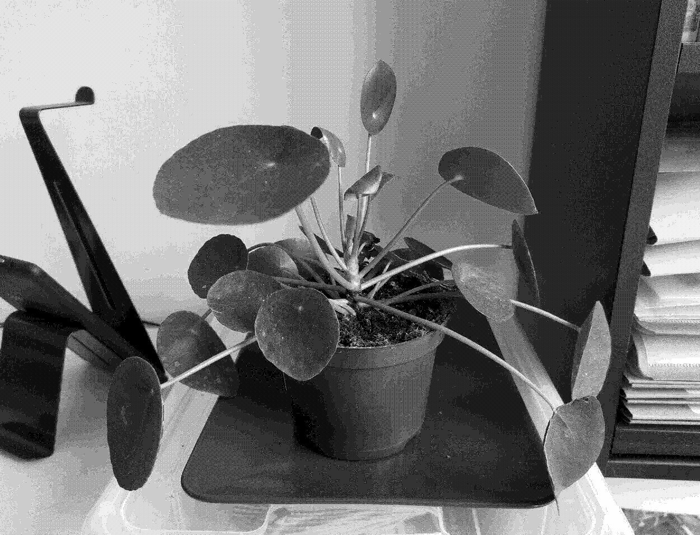

Pilea Peperomioides

Care
A beautiful plant that grows and propagate fast. Easy to take care of and tolerant of mistakes.
- Water twice a week in summer and spring, once every 10 days in fall and winter
- Likes lots of indirect light exposure
- Likes being indoors with enough moisture, but can also tolerate a dry atmosphere
- Self-propagate a lot: a perfect plant to make regular gifts